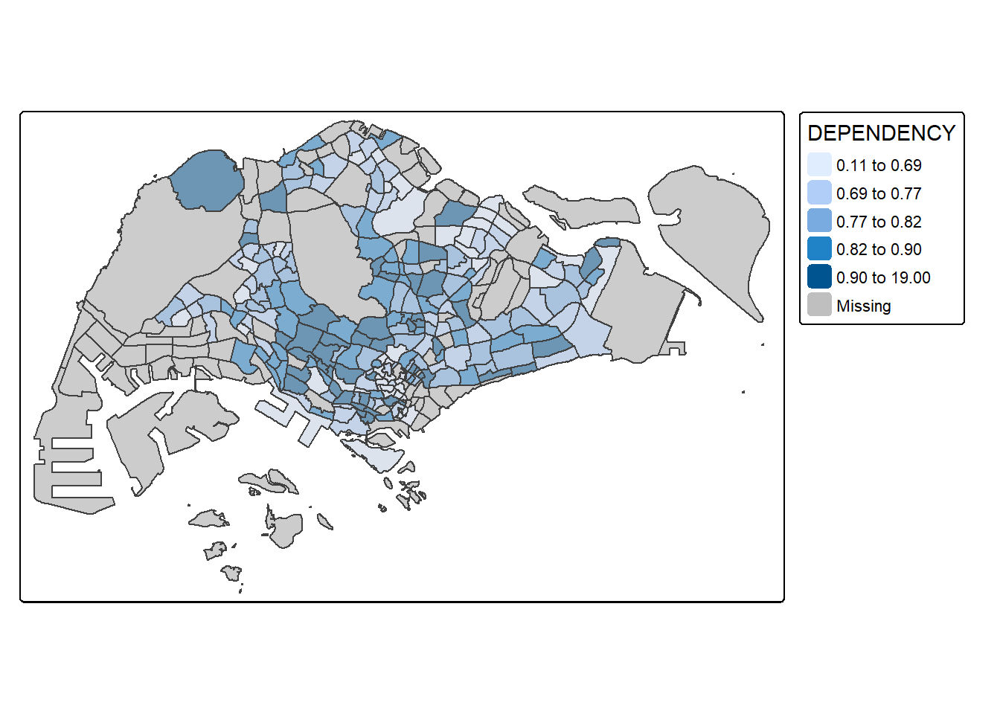
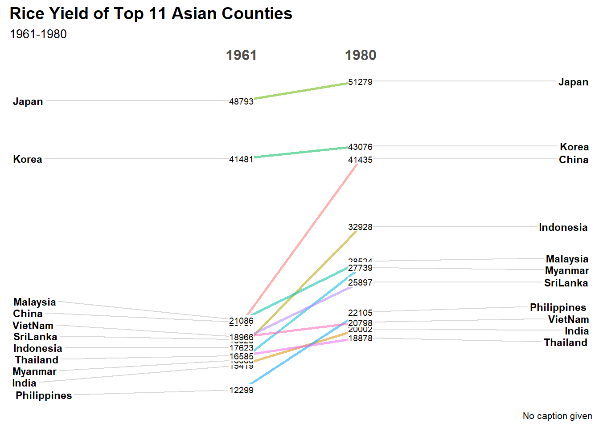

pacman::p_load(ggplot2,dplyr,scales, viridis, lubridate, ggthemes, gridExtra, readxl, knitr, data.table, CGPfunctions, ggHoriPlot, tidyverse)Hands on Exercise 07: Visualising and Analysing Time-oriented Data
1. Overview
By the end of this hands-on exercise you will be able create the followings data visualisation by using R packages:
3 plotting a calender heatmap by using ggplot2 functions,
5 plotting a cycle plot by using ggplot2 function,
6 plotting a slopegraph!
2. Getting Started
For the purpose of this hands-on exercise, eventlog.csv file will be used. This data file consists of 199,999 rows of time-series cyber attack records by country.
attacks <- read_csv("data/eventlog.csv")Please examine the imported data frame before further analysis is performed.
In order to avoid the NA in the further column, be cautous that your system should be set in English.
Sys.setlocale("LC_TIME", "C") [1] "C"kable(head(attacks))| timestamp | source_country | tz |
|---|---|---|
| 2015-03-12 15:59:16 | CN | Asia/Shanghai |
| 2015-03-12 16:00:48 | FR | Europe/Paris |
| 2015-03-12 16:02:26 | CN | Asia/Shanghai |
| 2015-03-12 16:02:38 | US | America/Chicago |
| 2015-03-12 16:03:22 | CN | Asia/Shanghai |
| 2015-03-12 16:03:45 | CN | Asia/Shanghai |
There are three columns, namely timestamp, source_country and tz.
- timestamp field stores date-time values in POSIXct format.
- source_country field stores the source of the attack. It is in ISO 3166-1 alpha-2 country code.
- tz field stores time zone of the source IP address.
2.1. Data Preparation
Two new fields namely wkday and hour need to be derived. In this step, we will write a function to perform the task.
make_hr_wkday <- function(ts, sc, tz) {
real_times <- ymd_hms(ts,
tz = tz[1],
quiet = TRUE)
dt <- data.table(source_country = sc,
wkday = weekdays(real_times),
hour = hour(real_times))
return(dt)
}ymd_hms()andhour()are from lubridate package, andweekdays()is a base R function.
Things to learn from code
A function make_hr_wkday is defined, whose purpose is to extract the “day of the week” (wkday) and “hour” (hour) from the timestamp (ts), and store this information together with the source country (sc) in data.table
make_hr_wkday:
ts: timestamp vector
sc: source country vector
tz: timezone vector
real_times
- ymd_hms(ts): Convert ts to datetime format, assuming ts is in YYYY-MM-DD HH:MM:SS format.
- tz = tz[1]: Parse the timestamp using the provided time zone tz[1].
- quiet = TRUE: Quiet mode, no warnings are displayed.
datatable
source_country = sc: record source country.
wkday = weekdays(real_times): Extract the day of the week of real_times (such as “Monday”, “Tuesday”).
hour = hour(real_times): Extract the hour part (0~23) of real_times.
Extract the time information (day of week and hour) from the attacks data frame (tibble) and convert these variables to factor type for subsequent analysis
wkday_levels <- c('Saturday', 'Friday',
'Thursday', 'Wednesday',
'Tuesday', 'Monday',
'Sunday')
#define the order
attacks <- attacks %>%
group_by(tz) %>%
do(make_hr_wkday(.$timestamp,
.$source_country,
.$tz)) %>%
ungroup() %>%
mutate(wkday = factor(
wkday, levels = wkday_levels),
hour = factor(
hour, levels = 0:23))
Things to learn from code
attacks
- group_by(tz): Group by tz (time zone) to ensure that the impact of different time zones is taken into account when processing time.
- do(make_hr_wkday(.\(timestamp, .\)source_country, .$tz))：The previously defined make_hr_wkday() function is called here to convert timestamp to day of the week (wkday) and hour (hour).
- do() will apply the make_hr_wkday() function one by one to the data grouped by group_by(), and then merge the results.
Ungroup and convert types
ungroup(): Cancel group_by() to ensure that subsequent mutate() acts on the entire data rather than the grouped data.
mutate(wkday = factor(wkday, levels = wkday_levels)): Convert wkday to a factor variable and set its order to wkday_levels (Saturday → Friday → … → Sunday).
mutate(hour = factor(hour, levels = 0:23)): Convert hour to a factor variable and set its range from 0 to 23, ensuring all hours have appropriate category labels
Table below shows the tidy tibble table after processing.
kable(head(attacks))| tz | source_country | wkday | hour |
|---|---|---|---|
| Africa/Cairo | BG | Saturday | 20 |
| Africa/Cairo | TW | Sunday | 6 |
| Africa/Cairo | TW | Sunday | 8 |
| Africa/Cairo | CN | Sunday | 11 |
| Africa/Cairo | US | Sunday | 15 |
| Africa/Cairo | CA | Monday | 11 |
3. Building the Calendar Heatmaps
grouped <- attacks %>%
count(wkday, hour) %>% #count the numbers of attack
ungroup() %>% #in order to do the ggplot
na.omit()
ggplot(grouped,
aes(hour,
wkday,
fill = n)) + #Set the X-axis (hour), Y-axis (wkday), and use fill to represent the number of attacks (n).
geom_tile(color = "white",
size = 0.1) +
theme_tufte(base_family = "Helvetica") + #set the theme
coord_equal() + #Make sure the X-axis is in equal proportion to the Y-axis
scale_fill_gradient(name = "# of attacks",
low = "sky blue",
high = "dark blue") + #set the level of the color
labs(x = NULL,
y = NULL,
title = "Attacks by weekday and time of day") + #hide x and y label
theme(axis.ticks = element_blank(), #remove axis ticks
plot.title = element_text(hjust = 0.5),
legend.title = element_text(size = 8),
legend.text = element_text(size = 6) )
Things to learn from code
- a tibble data table called grouped is derived by aggregating the attack by wkday and hour fields.
- a new field called n is derived by using
group_by()andcount()functions. na.omit()is used to exclude missing value.geom_tile()is used to plot tiles (grids) at each x and y position.colorandsizearguments are used to specify the border color and line size of the tiles.theme_tufte()of ggthemes package is used to remove unnecessary chart junk. To learn which visual components of default ggplot2 have been excluded, you are encouraged to comment out this line to examine the default plot.coord_equal()is used to ensure the plot will have an aspect ratio of 1:1.scale_fill_gradient()function is used to creates a two colour gradient (low-high)
Then we can simply group the count by hour and wkday and plot it, since we know that we have values for every combination there’s no need to further preprocess the data.
4. Building Multiple Calendar Heatmaps
There is the heatmaps for the top four countries with the highest number of attacks.
In order to identify the top 4 countries with the highest number of attacks, you are required to do the followings:
- count the number of attacks by country,
- calculate the percent of attackes by country, and
- save the results in a tibble data frame.
grouped <- attacks %>%
count(source_country, wkday, hour) %>% # 加入 source_country
ungroup() %>%
na.omit()
attacks_by_country <- count(
attacks, source_country) %>%
mutate(percent = percent(n/sum(n))) %>%
arrange(desc(n))In this step, you are required to extract the attack records of the top 4 countries from attacks data frame and save the data in a new tibble data frame (i.e. top4_attacks).
top4 <- attacks_by_country$source_country[1:4]
top4_attacks <- attacks %>%
filter(source_country %in% top4) %>%
count(source_country, wkday, hour) %>%
ungroup() %>%
mutate(source_country = factor(
source_country, levels = top4)) %>%
na.omit()ggplot(top4_attacks,
aes(hour,
wkday,
fill = n)) +
geom_tile(color = "white",
size = 0.1) +
theme_tufte(base_family = "Helvetica") +
coord_equal() +
scale_fill_gradient(name = "# of attacks",
low = "sky blue",
high = "dark blue") +
facet_wrap(~source_country, ncol = 2) +
labs(x = NULL, y = NULL,
title = "Attacks on top 4 countries by weekday and time of day") +
theme(axis.ticks = element_blank(),
axis.text.x = element_text(size = 7),
plot.title = element_text(hjust = 0.5),
legend.title = element_text(size = 8),
legend.text = element_text(size = 6) )
5. Plotting Cycle Plot
In this section, you will learn how to plot a cycle plot showing the time-series patterns and trend of visitor arrivals from Vietnam programmatically by using ggplot2 functions.
5.1 Data Preparation
For the purpose of this hands-on exercise, arrivals_by_air.xlsx will be used.
air <- read_excel("data/arrivals_by_air.xlsx")Next, two new fields called month and year are derived from Month-Year field.
Month-Year = "2023-06" → month = "Jun" (June)
Month-Year = "2023-06" → year = 2023
air$month <- factor(month(air$`Month-Year`),
levels=1:12,
labels=month.abb,
ordered=TRUE)
air$year <- year(ymd(air$`Month-Year`))Next, the code chunk below is use to extract data for the target country (i.e. Vietnam) and the year>2010.
Vietnam <- air %>%
select(`Vietnam`,
month,
year) %>%
filter(year >= 2010)hline.data <- Vietnam %>%
group_by(month) %>%
summarise(avgvalue = mean(`Vietnam`))5.2 Plotting the cycle plot
✅ Shows Vietnam air passenger trends by month (2010-2019).
✅ The black line represents the annual change in the number of passengers in that month.
✅ The red dotted line shows the average number of passengers (avgvalue) for that month.
ggplot() +
geom_line(data=Vietnam,
aes(x=year,
y=`Vietnam`,
group=month),
colour="black") +
geom_hline(aes(yintercept=avgvalue),
data=hline.data, #Horizontal line data comes from hline.data, ensuring that each month has a corresponding avgvalue
linetype=6,
colour="red",
size=0.5) +
facet_grid(~month) + #Display faceted by month
labs(axis.text.x = element_blank(),
title = "Visitor arrivals from Vietnam by air, Jan 2010-Dec 2019") +
xlab("") +
ylab("No. of Visitors") +
theme_tufte(base_family = "Helvetica")
6. Plotting Slopegraph
Slopegraph is suitable for comparing trends at two points in time.
Before getting start, make sure that CGPfunctions has been installed and loaded onto R environment. Then, refer to Using newggslopegraph to learn more about the function. Lastly, read more about newggslopegraph() and its arguments by referring to this link.
First, Import the data rice.csv.
rice <- read_csv("data/rice.csv")Next, code chunk below will be used to plot a basic slopegraph as shown below.
Visualizing rice yield changes in 11 Asian countries between 1961 and 1980 (Rice Yield).
Year：X axis → 1961 and 1980。Yield：Y axis (rice production)。Country：every line represent one country.For effective data visualisation design,
factor()is used convert the value type of Year field from numeric to factor.
rice %>%
mutate(Year = factor(Year)) %>% #Convert Year to a factor because ggslopegraph requires categorical variables to plot years
filter(Year %in% c(1961, 1980)) %>%
newggslopegraph(Year, Yield, Country,
Title = "Rice Yield of Top 11 Asian Counties",
SubTitle = "1961-1980")